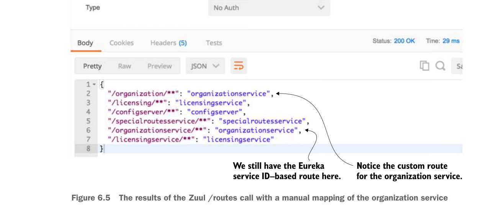

The results of the Zuul
/routes call with a manual mapping of the organization service.If you look carefully at figure 6.5 you’ll notice that two entries are present for the organization service. The first service entry is the mapping you defined in the application.yml file: “organization/**”: “organizationservice”. The second service entry is the automatic mapping created by Zuul based on the organization service’s Eureka ID: “/organizationservice/**”: “organizationservice”.
If you want to exclude the automated mapping of the Eureka service ID route and only have available the organization service route that you’ve defined, you can add an additional Zuul parameter to your application.yml file, called ignored-services.